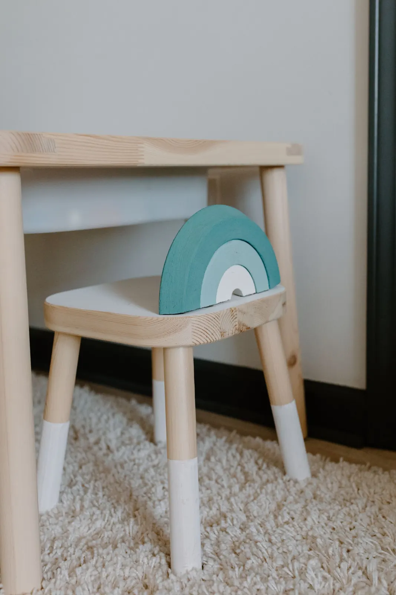

Início / Primeira consulta
Primeira consulta
A primeira visita ao dentista, no ritmo do seu filho
Seja um bebê de seis meses ou uma criança de sete anos que nunca foi ao dentista, a primeira consulta é para conhecer, conversar e orientar. Tratamento, se for preciso, fica para depois, com calma.

Quando vir
Quando nasce o primeiro dente, ou até o primeiro aniversário
É a recomendação das sociedades de odontopediatria. Começar cedo permite orientar a família antes que apareça qualquer problema, e a criança cresce vendo o dentista como parte da rotina.
Criança maior que ainda não foi ao dentista? Também é bem-vinda. O primeiro encontro segue o mesmo princípio: conhecer antes de examinar.
Venha antes da data se notar
- Manchas brancas ou escuras nos dentes
- Dor, inchaço ou sangramento na gengiva
- Dente que bateu, mudou de cor ou ficou mole
- Dificuldade para mamar ou dúvida sobre o freio da língua
- Uso prolongado de chupeta ou de dedo
Passo a passo
Como é a consulta
Duração média de 40 a 60 minutos (referência desta demonstração), porque a conversa faz parte do atendimento.
1. Conversa com a família
Histórico da gestação e do nascimento, alimentação, sono, hábitos, medicamentos e as suas dúvidas. É o momento mais longo da primeira consulta.
2. Exame no colo ou na cadeira
Bebês ficam no colo do responsável, de frente para a dentista (joelho com joelho). Crianças maiores podem conhecer a cadeira, o espelhinho e a luz antes.
3. Orientação prática
Mostramos como limpar a boca e escovar na idade da criança, com a escova certa e a quantidade certa de creme dental.
4. Avaliação do risco de cárie
Com base no exame e nos hábitos, a dentista explica o risco e o que pode ser feito em casa para mantê-lo baixo.
5. Plano de retornos
Você sai com a data sugerida do próximo retorno e, se for preciso tratar algo, com o plano explicado por etapas.
Sem surpresa
Nenhum procedimento é feito sem você entender e concordar. Se algo for necessário, é explicado e agendado com antecedência.
Antes de vir
Como preparar a criança
- Conte com naturalidade que vão visitar a dentista que cuida dos dentes das crianças.
- Leia um livro ou brinque de dentista em casa, contando os dentes do ursinho.
- Evite frases como "não vai doer" ou "não precisa ter medo": elas trazem ideias que a criança ainda não tinha.
- Prefira um horário em que ela não esteja com sono nem com fome.
- Pode trazer o brinquedo ou o paninho preferido.
O que trazer
- Documento da criança e carteirinha do plano, se houver
- Lista de medicamentos em uso e alergias
- Exames ou radiografias anteriores, se tiver
- Suas perguntas anotadas (elas somem na hora!)
- A escova que a criança usa em casa
Planos odontológicos: a cobertura e a necessidade de autorização dependem do seu plano. Confirme pelo WhatsApp antes da consulta.
Perguntas
Dúvidas da primeira vez
Meu bebê ainda não tem dentes. Já vale a pena ir?
Vale, principalmente se você tem dúvidas sobre amamentação, mamadeira, chupeta, freio da língua ou limpeza da gengiva. A consulta é de orientação.
A primeira consulta já inclui limpeza ou flúor?
Depende da idade e do que for visto no exame. Em muitos casos a primeira visita é só conversa, exame e orientação. Se algo for indicado, a dentista explica antes.
Quem pode acompanhar?
Pai, mãe ou outro responsável legal. Se for outra pessoa da família, traga uma autorização simples do responsável.
E se a criança não colaborar?
Tudo bem. A primeira visita pode terminar só com a apresentação do espaço. Voltamos outro dia, sem pressa e sem forçar.
Agende a primeira consulta
Escolha a idade da criança para começar. A equipe confirma o horário pelo WhatsApp.